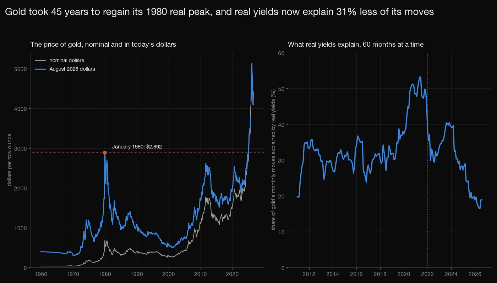
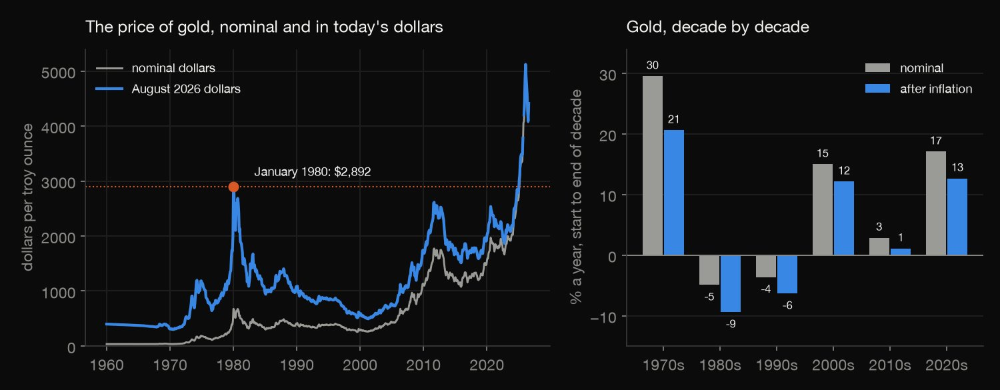
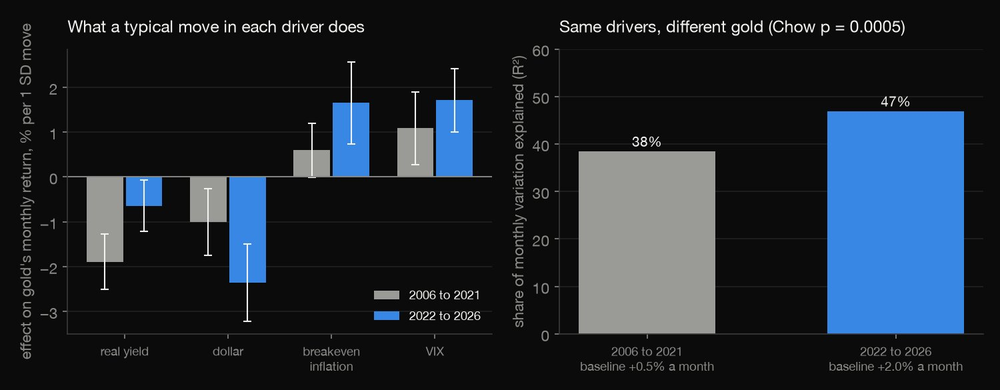
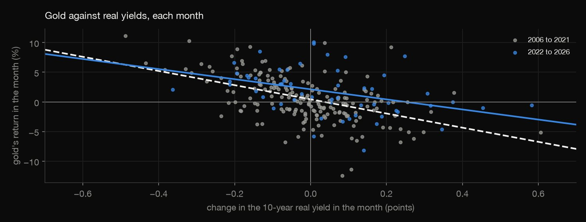
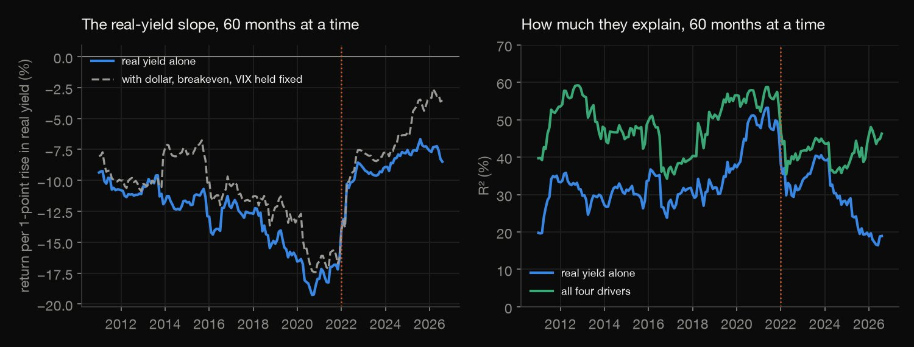
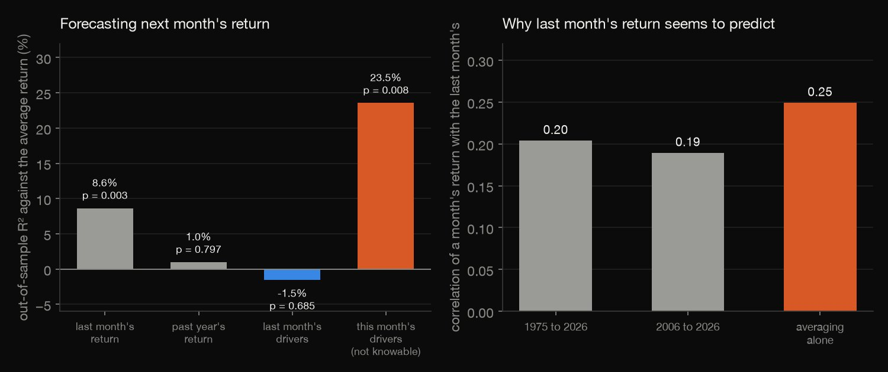

Python · Time series · 2026-10
What Moves the Price of Gold?
Gold took 45 years to regain its 1980 real peak. Real yields, the dollar, inflation expectations and fear explain 35% of its monthly moves, real yields alone explain 31% less since 2022, and none of them forecasts next month's return (-1.5% out of sample).

Same-month associations are not forecasts, and gold here is a monthly average of daily prices, as are the drivers (which creates apparent forecastability from averaging alone). The World Bank changed the gold series' definition in June 2025 and the October 2025 CPI was never published; neither was adjusted for. One break date (2022) was chosen after the fact; linear, constant-coefficient models only. Sources: World Bank Pink Sheet (CC BY 4.0) and FRED (Board of Governors, CBOE, BLS).
01 — The problem
Gold is said to move with real interest rates, the dollar, inflation expectations and fear. How much of its monthly moves do those explain, did that survive the rally that began in 2022, and does any of it forecast next month's price?
The task follows GeeksforGeeks' "Gold Price Analysis and Forecasting Over Time". The data is the World Bank's monthly gold price since 1960 and four FRED series, with every test fitted only on the past.
02 — What I built
The gold price and four drivers, looked at five ways:
- The audit: gaps, the series' start dates and the missing October 2025 price index.
- The long run: nominal and real price, the 1980 peak and the decades.
- The drivers: a four-variable regression, a Chow test, and 60-month rolling fits.
- The forecasts: five expanding-window models of next month's return, scored out of sample.
- Check:
check.pyrecounts all 1,156 numbers in plain Python, with no data or statistics library.
03 — How it was built
- 01
Download the price and the drivers
The World Bank's Pink Sheet workbook (monthly prices since 1960, CC BY 4.0) and five FRED series: the real yield, breakeven inflation, the dollar index, the VIX and consumer prices (about 1.1 MB, fetched and never committed, with their checksums). FRED stalls on any custom request header, so the plain default one is used.
FILES.update({f"{s}.csv": f"https://fred.stlouisfed.org/graph/fredgraph.csv?id={s}" for s in ("DFII10", "T10YIE", "DTWEXBGS", "VIXCLS", "CPIAUCSL")}) - 02
Regress the monthly return on the four drivers
Gold's monthly return (100 times the change of its log) on the monthly changes of the real yield, the dollar, breakeven inflation and the VIX, from 2006, with Newey-West standard errors; then the same for before 2022, from 2022, and for every 60-month window.
b, inv, e, Xa = ols(d[DRIVERS].to_numpy(), d["gold_return"].to_numpy()); se = hac(Xa, e, inv) - 03
Test whether 2022 changed the model
A Chow test compares one regression over all months with two, one before 2022 and one from it: F is the drop in the residual sum of squares from splitting, over its degrees of freedom.
F = ((rss_r - rss_u) / k) / (rss_u / (n - 2 * k)) - 04
Forecast next month with only the past
For each month from February 2014, every model is refitted on all earlier months and predicts the month from what was known the month before; the same month's drivers (which no forecaster has) are included as a ceiling. Scores are out-of-sample R-squared against the expanding average, with Diebold-Mariano tests.
b = lagfit(X[s - 1], yv[s]); preds["drivers, lagged"].append(b[0] + X[t - 1] @ b[1:]) - 05
Recount it all without the libraries
check.pyreads the files with the csv module and recomputes the monthly means, the long-run table, every regression with its standard errors, the Chow test (its p-value from the incomplete beta function), the rolling fits and every expanding-window forecast: 1,156 numbers to a relative tolerance of 1e-8.p = betainc(d2 / 2, k / 2, d2 / (d2 + k * F))
04 — Results
The long run. Gold went from $35 an ounce in January 1960 to a peak of $5,020 in February 2026 and $4,411 in August 2026. In August 2026 dollars it peaked at $2,892 in January 1980, fell to $492 in April 2001, and did not regain the 1980 level until February 2025, 45 years later: 97% of the months from 1971 to 2026 were below it. The table gives the growth rate per year of each decade, nominal and after inflation (the 2020s run to August 2026).
| Decade | Nominal | Real |
|---|---|---|
| 1970s | +30% | +21% |
| 1980s | -5% | -9% |
| 1990s | -4% | -6% |
| 2000s | +15% | +12% |
| 2010s | +3% | +1% |
| 2020s | +17% | +13% |

Four drivers explain about a third of the monthly moves. Over 247 months, from 2006, the change in the 10-year real yield, in the dollar index, in breakeven inflation and in the VIX explain 35% of the variation of gold's monthly return. A one-point rise in the real yield goes with a -8.2% return, a 1% rise in the dollar with -0.92%, a one-point rise in breakeven inflation with +5.4% and a one-point rise in the VIX with +0.25%; each is more than two standard errors from zero. A "return" is the change of a monthly average, so these are same-month associations, not forecasts.
Whether it held up after 2022. The table gives the coefficients of the same regression before 2022 and from 2022 (the baseline is the average monthly return left over). The model explained 38% before and 47% after, but the coefficients moved, and a Chow test rejects equal coefficients (F = 4.57 on 5 and 237, p = 0.0005). Applied to 2022 to 2026 with the actual drivers, the pre-2022 model has an out-of-sample R-squared of 0.18 against the pre-2022 mean return; the refit gets 0.47.
| Driver | To 2021 | From 2022 |
|---|---|---|
| Real yield | -10.43 | -3.56 |
| Dollar | -0.76 | -1.78 |
| Breakeven | +4.43 | +12.25 |
| VIX | +0.23 | +0.36 |
| Baseline | +0.50 | +1.98 |
| R² | 0.38 | 0.47 |

Real yields alone explain less, and share their work with the dollar. On its own, the real yield explains 28% of the monthly variation before 2022 (slope -12.0) and 19% after it (slope -8.5), 31% less. With the other three held fixed, its coefficient falls by two-thirds, as the real yield and the dollar became more correlated (correlation of their monthly changes 0.34 before 2022, 0.58 since), so part of the real-yield effect shows up in the dollar.


Nothing in the drivers forecasts next month's return. The table scores forecasts of the month's return from February 2014, 151 months, each refitted on all earlier months: R² is the out-of-sample R-squared against the expanding average, Signs the share of months whose sign was right (53% of months had a positive return). Last month's four drivers score -1.5% (Diebold-Mariano p = 0.69) and last year's average return 1.0% (p = 0.80). The same month's drivers, which no forecaster has, would score 23.5%: explaining is not predicting.
| Forecast | R² | Signs |
|---|---|---|
| Average return | 0.0% | 53% |
| Last return | 8.6% | 57% |
| Past year | 1.0% | 50% |
| Last drivers | -1.5% | 50% |
| This month's | 23.5% | 72% |
Last month's return seems to predict, and averaging is enough to explain it. An AR(1) on last month's return scores 8.6% (p = 0.003). The monthly price is an average of daily prices, and the changes of averages of a random walk are correlated at lag one by construction: for a random walk in the price, with 21 days a month, the exact value is 0.249 (Working, 1960). The observed lag-1 autocorrelation is 0.20 (1975 to 2026) and 0.19 (2006 to 2026), close to what averaging alone gives. The monthly return has a standard deviation of 3.9% since 2006, 13.5% a year.

05 — What I'd do next
- Use daily prices, which the World Bank file does not have, to remove the averaging effect, and test whether any driver forecasts a day or a week ahead.
- Add central-bank gold purchases and exchange-traded-fund flows, the usual explanations for the break after 2022, and see whether they absorb the shift.
- Forecast volatility instead of the return, since gold's swings (13.5% a year) look more predictable than its direction.